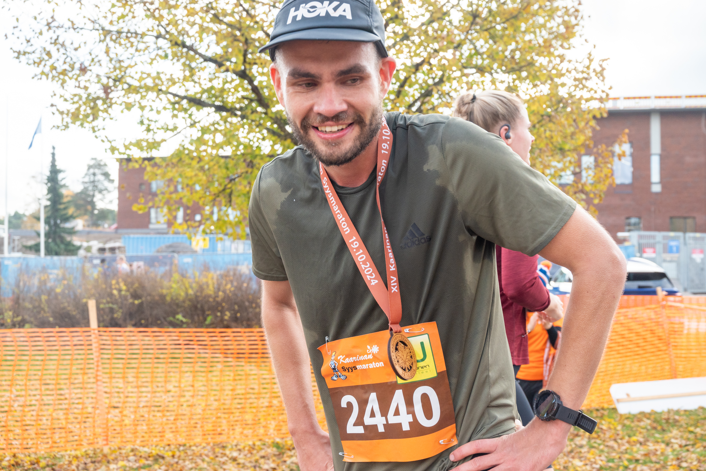

Workouts
Interval Training
My first interval workout session focusing on speed endurance and recovery management.
Races
Helsinki City Running Day, Marathon Relay – May 17, 2025

Helsinki City Running Day once again offered an amazing atmosphere. This time I took part in the marathon relay as part of our team Aurajoen Dynamo, together with my training friends from Turku. We managed to secure 3rd place overall, which was a great achievement for us.
My personal stint was 12.3 kilometers, and I held a steady 3:38 min/km pace, which was really good for my condition at that time.
The event is Finland’s largest running event, bringing together thousands of runners from around the world. More info here: Helsinki City Running Day.
You can also find more details about my race on my Strava page.
Paavo Nurmi Marathon 2025

Paavo Nurmi Marathon, organized in Turku, was a great experience. My year had been tough due to an irritating and long-lasting ankle injury. However, I managed to get proper training in during the last 6 weeks before the race and was able to get into good shape.
I finished 6th overall with a time of 2:49:56, which was a new personal best. I kept a steady 4 min/km pace throughout the race and managed to hold it until the end.
The event is one of the biggest marathon races in Finland. More info here: Paavo Nurmi Marathon.
More details about the race on my Strava page.
Paavo Nurmi Marathon 2024
The 2024 edition of the Paavo Nurmi Marathon was a turning point for me. I faced challenges with pacing and struggled during the second half of the race, but crossing the finish line was still a huge personal victory.
That experience taught me the importance of consistency in training and mental resilience during tough moments. The lessons learned in 2024 directly influenced how I prepared for the 2025 race.
Training Plans
Marathon 12-week plan
A structured 12-week training plan designed to achieve a sub-3-hour marathon with focus on long runs, intervals and recovery.
Other
Running Gear Review
Reviewing running shoes, GPS watches and other essential gear for training and races.